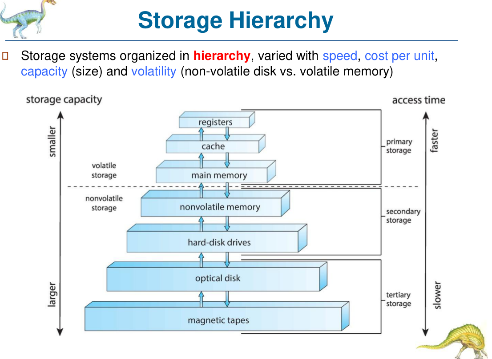
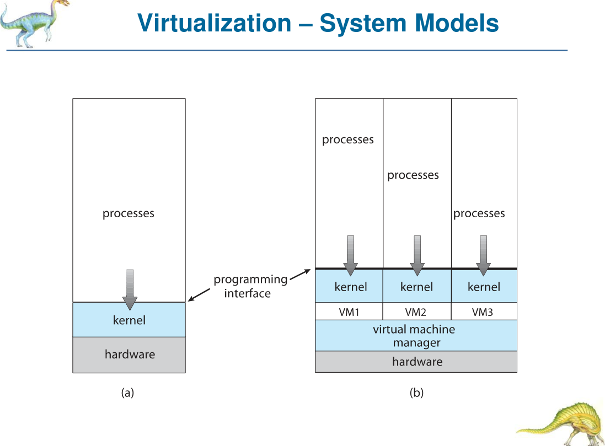

Chapter 1 — Introduction（引言）
📌 考試範圍提示：Ch1 主要出 MC（2–4 題） 同 short question（定義題）。最常考：caching / locality / average access time、von Neumann、storage hierarchy、SMP / multicore / NUMA、multiprogramming vs timesharing、virtualization / cloud。 ⚠️ 留意：今個 term（Fall 2026）嘅 slides 將 interrupt / DMA / dual-mode 放咗喺 Ch3 slides 3.21–3.31（舊 paper 寫 "1.40" 係舊版 slide number）。呢部分喺 Ch3 notes §0，但 MC 一樣會考。
#1. What is an Operating System?（OS 係乜？）[1.20–1.24]
#1.1 Computer system 四個組成部分 [1.20]
| Component | 解釋 |
|---|---|
| Users | 人、機器、其他電腦 / devices |
| Application programs | 定義點樣用 system resources 去解決問題（editors, compilers, web browsers, database, games） |
| Operating system | controls and coordinates use of computing resources among various applications and users |
| Hardware | basic computing resources：CPU, memory, I/O devices |
#1.2 OS 嘅定義 [1.21, 1.23]
- OS is a system software that acts as an intermediary between users (or application software) and computer hardware.（OS 係用戶/應用程式同硬件之間嘅中介）
- OS hides the complicated details of the hardware 並提供 simple and easy-to-use interface（例如你處理 photos、web pages、files，而唔係 bytes 同 blocks）→ 呢個叫 abstraction。
- There is no universally accepted definition of OS. "Everything a vendor ships when you order an operating system" 只係一個 approximation。
- 兩個角色（必背）：
- OS is a resource allocator — manages all resources (hardware and software); decides between conflicting requests for efficient and fair resource use.
- OS is a control program — controls execution of programs to prevent errors and improper use of the computer.
- 一句總結："OS manages and controls hardware and helps to facilitate programs to run on computers."
#1.3 OS 嘅兩大目標（Chapter summary）
- User convenience — provides an environment for users to execute programs in a convenient, safe, protected and efficient manner.
- Resource allocation — allocates resources (hardware: CPU, memory; software: signals, locks) in a fair and efficient manner.
📝 HW1 MC3 例子：「幾個 job 喺 shared computer 等運行，OS 決定邊個 job 用 CPU、memory 點分配」→ OS acts as a resource allocator。
#1.4 唔同環境嘅 OS [1.22]
| 環境 | 重點 |
|---|---|
| Shared computers（mainframe / minicomputer） | 要令所有 user 滿意 → performance vs. fairness |
| Individual systems（workstations） | dedicated resources，重 performance 多過 fairness |
| Mobile devices | resource constrained；touch screen、voice（Siri）；optimized for usability and battery life |
| Embedded systems | 好少或無 UI；OS pre-installed in ROM（冷氣機、汽車、太空船） |
| Real-time systems | strict time constraints |
#1.5 常見名詞 [1.24]
- Kernel — "the one program running at all times on the computer"（核心功能）。
- Middleware — a set of software frameworks providing additional services to application developers（databases, multimedia, graphics）；mobile OS（iOS, Android）好常見。
- System programs — ships with the OS but not part of the kernel（例如 compilers）。
- Application programs — 同 OS 無關嘅程式（App Store 啲 app）。
- OS = always-running kernel + middleware frameworks + system programs.
#2. Computer System Organization（電腦系統組織）[1.25–1.27]
- One or more CPU cores 同 device controllers 經 common bus 連接，share memory。[1.25]
- CPUs and devices execute concurrently，compete for memory cycles through the shared bus。
- 每個 device controller 管一類 device，有自己嘅 local buffer；OS 用 device driver 同 controller 溝通（device driver = kernel module that controls a device）。
- [1.27] 圖：processor + cache ↔ bridge/memory controller ↔ memory；PCI bus 連 graphics controller、SCSI controller、IDE disk controller、expansion bus interface（keyboard, parallel/serial port）。
#2.1 von Neumann Architecture [1.26] ⭐（MC 常客）
- Stored-program architecture：instructions and data are stored in the same memory（同一個 memory space，用 address 存取）。
- CPU contains an ALU (arithmetic logic unit) and processor registers — PC (Program Counter), AC (Accumulator), MAR (Memory Address Register), MDR (Memory Data Register)。
- Control unit — IR (Instruction Register) and PC。
- Memory stores data and instructions（along with caches）；external mass storage = secondary storage；input and output mechanisms。
- Instruction execution steps（instruction–execution cycle）：
- Fetch instruction（from memory/cache → 放入 IR）
- Decode instruction
- Fetch data（operands → data registers）
- Execute instruction
- Write back（if any，結果寫返 memory/cache）
- Programs and data must be brought into memory before execution.
- MMU (memory management unit) sees only a stream of memory addresses — 佢唔知 address 點產生、亦唔知係 instruction 定 data。
⚠️ 陷阱：
- "Instructions and data are stored in separate physical memories" ✗（嗰個係 Harvard architecture）。
- "PC stored in external mass storage" ✗；"CPU has no ALU" ✗。
- Sp21 MC：「processing unit contains a/an ___ and processor registers」→ ALU（唔係 "all of the mentioned"，因為 IR/PC 屬 control unit）。
#3. Storage（儲存）[1.28–1.35]
#3.1 單位 [1.28]
- bit（0/1）；byte = 8 bits（大部分電腦最細嘅 convenient chunk，冇 move 1 bit 嘅 instruction，但有 move 1 byte）。
- word = 一個 architecture 嘅 native unit of data（64-bit registers → 64-bit (8-byte) word）。
- KB = = 1,024 bytes；MB = bytes；GB = ；TB = ；PB = 。
- 廠商通常 round off（MB ≈ 1 million bytes）；networking measured in bits（Mb/s, Gb/s）。
#3.2 Storage Hierarchy [1.29] ⭐
按 speed, cost per unit, capacity (size), volatility 分層：
registers ┐
cache │ primary storage (volatile)
main memory ┘
- - - - - - - - - - - - - - - - - - - - - - - - - - - -
nonvolatile memory (NVM) ┐ secondary storage (nonvolatile)
hard-disk drives (HDD) ┘
optical disk ┐ tertiary storage
magnetic tapes ┘
上面：smaller, faster, more expensive per byte
下面：larger, slower, cheaper per byte
- 越近 CPU → 越快、越細、每 byte 越貴；越落 → cost per byte 減、access time 增、capacity 增。

#3.3 Main Memory [1.30]
- Main memory is the only large storage media that the CPU can access directly.（CPU 係 indirectly 存取 secondary storage）
- Volatile；通常係 DRAM (Dynamic Random-Access Memory)。
- load / store instructions to specific addresses；byte addressable — each address refers to one byte。⭐（S26 MC3 答案）
- 開機第一個程式 bootstrap program 存喺 EEPROM（firmware）。
#3.4 Secondary Storage [1.31]
- Extension of main memory providing large non-volatile storage capacity。
- 最常見：HDDs 同 NVM devices（例如 SSD）。
- Mechanical（HDD, optical disk, magnetic tape）vs Electrical（flash, SSD, FRAM, NRAM → 統稱 NVM）。
- Mechanical: larger and less expensive per byte. Electrical: more costly, smaller, more reliable, and faster.
#3.5 Characteristics of storage [1.34]（睇表記「Managed by」）
| Level | 1 registers | 2 cache | 3 main memory | 4 SSD | 5 magnetic disk |
|---|---|---|---|---|---|
| Typical size | < 1 KB | < 16 MB | < 64 GB | < 1 TB | < 10 TB |
| Technology | custom memory, multiple ports CMOS | on/off-chip CMOS SRAM | CMOS SRAM（slide 原文） | flash memory | magnetic disk |
| Access time (ns) | 0.25–0.5 | 0.5–25 | 80–250 | 25,000–50,000 | 5,000,000 |
| Bandwidth (MB/s) | 20,000–100,000 | 5,000–10,000 | 1,000–5,000 | 500 | 20–150 |
| Managed by | compiler | hardware | operating system | OS | OS |
| Backed by | cache | main memory | disk | disk | disk or tape |
- Movement between levels of storage hierarchy can be explicit or implicit.（例如 cache ↔ memory 由 hardware 隱式處理；memory ↔ disk 由 OS 顯式處理）
#3.6 Range of Timescales [1.35]（Jeff Dean "Numbers Everyone Should Know"）
L1 cache 0.5 ns；branch mispredict 5 ns；L2 cache 7 ns；mutex lock/unlock 25 ns；main memory reference 100 ns；compress 1KB 3 µs；send 2KB over 1 Gbps 20 µs；read 1MB from memory 250 µs；round trip in datacenter 500 µs；disk seek 10 ms；read 1MB from disk 20 ms；packet CA→Netherlands→CA 150 ms。
#4. Caching ⭐⭐（必考 short question）[1.32–1.33]
#4.1 Fundamental idea
📝 Model answer：The fundamental idea of caching is to temporarily copy a subset of information from a slower but larger storage to a faster but smaller storage, so that frequently used data can be accessed more quickly.（make frequently used case faster, less frequent case less dominant）
- Caching performed at many levels：memory、address translation、file blocks、file names、file directories、network routes…
- 存取時先 check cache：
- Hit — information is in the cache → used directly (fast)
- Miss — not in cache → data copied from slower storage to cache and used there
- Cache is usually much smaller than the storage being cached.
- Cache management：cache size 同 replacement policy。
- Major criterion: cache hit ratio（percentage of content found in cache）。
#4.2 Average access time（公式必背）
🧮 Average Access Time（AMAT）
- 。
- HW1 例：hit ratio 90%、hit time 2 ns、miss time 50 ns → 6.8 ns。
- 如果題目畀 miss penalty（額外時間）而唔係 miss time： → （兩條公式結果一樣）。
📝 S26 Q2.2 Model answer（high hit ratio 夠唔夠？）：No. Cache performance is not judged only by cache hit ratio. Although hit ratio is a major criterion, the overall performance should be evaluated using the average access time, which depends on both the hit time and the miss time (miss penalty). A cache with a high hit ratio but a long hit time or a huge miss penalty can still perform poorly.
#4.3 Locality — why caching works ⭐
- Temporal locality (locality in time) — recently accessed items are likely to be accessed again in the near future.
- 例：loop counter
i、loop 入面重複執行嘅 instructions、成日 call 嘅 function。
- 例：loop counter
- Spatial locality (locality in space) — items near (contiguous to) the recently accessed items are likely to be accessed shortly（data 同 program 都係）。
- 例：順序讀 array
a[0], a[1], a[2]…；順序執行 instructions。
- 例：順序讀 array
- Without access locality（e.g. all items accessed with equal probability）, cache would never work!
- F20 MC1："Locality is essential to ___" → Cache。
#5. Processor Systems（處理器系統）[1.36–1.41]
#5.1 Single-Processor Systems [1.36]
- 一個 CPU，single processing core；core 執行 instructions，有 registers 存 data。
- 仲有 special-purpose processors（device-specific：disk controller、GPU）→ 跑 limited instruction set，do not execute instructions from user processes。
#5.2 Multiprocessor Systems [1.37] ⭐
- 而家由 mobile 到 server 都係 multiprocessor 主導。
- Speed-up ratio with N processors is less than N — 因為 overhead, e.g., contention for shared resources (bus or memory)。
- 三大優點（必背）：
- Increased throughput — more computing capability
- Economy of scale — share other devices（I/O devices, power supplies, housings, peripherals）→ 平過多部單 CPU 機
- Increased reliability — graceful degradation or fault tolerance
- 缺點（summary）：hardware design 同 software（parallel programming）都複雜好多。
- 兩類：
- Asymmetric multiprocessing (AMP) — master–slave：master assigns specific tasks to slaves and handles I/O。（Ch5：master 可以變 bottleneck）
- Symmetric multiprocessing (SMP) — each processor performs all tasks, including OS functions and user processes；I/O 可以由任何 processor 處理。
#5.3 SMP [1.38]
- Each CPU has its own set of registers and a private (local) cache; all processors share physical memory through the system bus.
#5.4 Multicore [1.39] ⭐
- Multiple computing cores reside on a single physical chip.
- 優點：faster on-chip communication than between-chip communication；uses significantly less power（mobile/laptop 重要）。
📝 F19 Q2.5：Multicore SMP systems are faster and consume less power than systems in which each CPU has its own physical chip (on-chip communication is faster).
#5.5 NUMA (Non-Uniform Memory Access) [1.40] ⭐
- 問題：加更多 CPU 未必 scale，因為 contention for the system bus → bottleneck。
- 解決：each CPU (or group of CPUs) has its own local memory accessed via a small, fast local bus；CPUs connected by a shared system interconnect；all CPUs share one physical memory address space。
- Drawback: increased latency when a CPU must access remote memory across the system interconnect → 影響 scheduling and memory management（Ch5 processor affinity）。
⚠️ HW1 MC4：「In NUMA, every CPU accesses every part of memory with exactly the same latency」→ False（Non-uniform 就係唔同 latency）。
#5.6 名詞定義 [1.41]（MC 易混）
| Term | Definition |
|---|---|
| CPU | The hardware that executes instructions |
| Processor | A physical chip that contains one or more CPUs |
| Core | The basic computation unit of the CPU（executes instructions + registers） |
| Multicore | Multiple computing cores on a single physical processor chip |
| Multiprocessor | Including multiple processors |
#6. Multiprogramming & Timesharing ⭐ [1.42]
- 所有 modern OS 都有兩個特徵：
- Multiprogramming (batch system) — needed for efficiency。
- 以前一次 load 一個 program；single program cannot keep CPU or I/O devices busy at all times。
- Multiprogramming organizes jobs so that the CPU always has one to execute.（一個 job 等 I/O → CPU 轉做另一個 job）
- Mainframe：jobs submitted remotely and queued → job scheduling 揀邊啲 load 入 memory。
- Timesharing (multitasking) — logical extension of multiprogramming in which the CPU switches jobs so frequently that users can interact with each job while it is running → interactive computing。
- Response time should be under a certain threshold（通常 < 1 秒）。
- Multiprogramming (batch system) — needed for efficiency。
- 相關概念：
- A program in execution → process
- Several processes ready at the same time → CPU scheduling
- Processes don't fit in memory → swapping moves them in and out
- Virtual memory allows execution of processes not completely in memory
📝 HW1 Q2.2 Model answer：Multiprogramming keeps several jobs in memory at the same time. When the running job has to wait (e.g., for I/O), the OS switches the CPU to another job, so the CPU always has something to execute and CPU utilization increases. Time sharing (multitasking) extends multiprogramming by switching the CPU among jobs so frequently (using CPU scheduling and timer interrupts) that each user gets a fast response time and can interact with the program while it is running — this supports interactive computing.
#7. Virtualization ⭐ [1.43–1.46]
- Virtualization abstracts the hardware of a single computer into multiple different execution environments，令每個 user/program 以為自己有部 "private computer"。
- 創造 virtual machine (VM)，OS 同 applications 可以喺上面跑。
- It allows an operating system to run as an application within another operating system. ⭐（F20 MC2 答案：Virtualization，唔係 Emulation）
- Components [1.44]：
- Host — underlying hardware system
- Virtual machine manager (VMM) or hypervisor — creates and manages virtual machines by providing an interface identical to the host
- Guest OS — process provided with a virtual copy of the host（通常係一個 OS）
- Motivations [1.43]：
- Server consolidation — 將多個 OS 合併到較少 hardware 上
- Desktop 上跑一個 OS（Linux/macOS）但仍用到另一個平台（Windows）嘅 native apps
- Developers can run many OS types/versions on one machine → easier testing and debugging
- [1.45] 圖：(a) processes → kernel → hardware；(b) 每個 VM 有自己 kernel，VM1/VM2/VM3 → VMM → hardware。

- History [1.46]：IBM mainframes (1972)；VMware 喺 Intel x86 跑多個 Windows guest；programs in a VM show only minor performance decreases（多咗幾層 software）；VMM is in complete control of system resources；1990s 後期 Intel CPU 夠快；Xen、VMware。
- Emulation vs Virtualization（課本背景）：Emulation = 模擬 different CPU architecture（source CPU ≠ target CPU，慢）；Virtualization = guest OS natively compiled for the CPU。
⚠️ HW1 MC8：「An application always runs faster inside a VM」→ False（只會 minor performance decrease）。
#8. Cloud Computing [1.47–1.48]
- Delivers computing, storage, and apps as a service over a network.
- Logical extension of virtualization（用 virtualization 作基礎）；例：Amazon EC2（pay based on usage）。
- Types：
- Public cloud — available via Internet to anyone willing to pay
- Private cloud — run by a company for its own use
- Hybrid cloud — both public and private components
- Service models（MC 易考 match）：
- SaaS (Software as a Service) — applications via Internet（e.g. word processor）
- PaaS (Platform as a Service) — software stack ready for application use（e.g. database server）
- IaaS (Infrastructure as a Service) — servers or storage over Internet（e.g. storage for backup）
- MaaS — Machine learning as a Service
#9. I/O Subsystem（Chapter 1 summary 提及）
- I/O 硬件三元素：buses, device controllers, devices。
- 搬 data（device ↔ main memory）：CPU in programmed I/O 或者 offloaded to a DMA controller。
- Device driver = kernel module that controls a device。
- Kernel I/O subsystem services：I/O scheduling, buffering, caching, spooling, device reservation, error handling。
- Buffering — store data temporarily while it is being transferred；Caching — faster storage holding a copy of data（Lab 2）。⭐ A buffer may hold the only existing copy of a data item, whereas a cache only holds a copy of an item that resides elsewhere.
- Spooling — hold output for a device that cannot accept interleaved data（e.g. printer），coordinating concurrent output。
- I/O hardware（Lab 2）：port（connection point）、bus（PCI/PCIe；expansion bus for slow devices）、controller (host adapter)；device registers：data-in, data-out, status, control。
- （Interrupt、DMA、dual-mode 詳細見 Ch3 notes §0（slides 3.21–3.31））
#10. 常見陷阱 & MC 速查（Traps）
| 敘述 | 真/假 | 原因 |
|---|---|---|
| Main memory is byte addressable | ✅ | each address refers to one byte [1.30] |
| Main memory is nonvolatile | ❌ | DRAM 係 volatile |
| Registers are slower than main memory | ❌ | registers 最快 |
| HDD is smaller than volatile memory | ❌ | HDD 大好多 |
| CPU can directly access secondary storage | ❌ | 只可 directly access main memory |
| Instructions and data stored in same memory (von Neumann) | ✅ | stored-program |
| Speed-up with N processors = N | ❌ | < N due to overhead/contention |
| Multicore uses less power than multiple single-core chips | ✅ | [1.39] |
| NUMA: same latency for all memory | ❌ | remote memory slower |
| SMP: each processor has private cache, shares memory | ✅ | [1.38] |
| AMP: master handles I/O | ✅ | [1.37] |
| Timesharing is an extension of multiprogramming | ✅ | [1.42] |
| VM always faster than native | ❌ | minor slowdown |
| Virtualization lets an OS run as an app within another OS | ✅ | [1.43] |
| Cache works even with uniform random access | ❌ | needs locality |
| High hit ratio alone guarantees performance | ❌ | also hit time & miss time |
| Cache is managed by OS | ❌ | hardware（[1.34]）；registers by compiler |
#11. Past-paper 題目（Ch1 相關）
- S26 MC3：storage hierarchy 正確嘅係？→ D. Main memory is byte addressable。
- S26 MC4：von Neumann 核心特徵？→ B. Instructions and data stored in the same memory space, accessed by address。
- S26 Q2.2：caching 基本概念 + 高 hit ratio 夠唔夠？→ 見 §4。
- F19 Q1.2：temporal vs spatial locality？→ 見 §4.3。
- F20 MC1：Locality is essential to → Cache。
- F20 MC2：___ allows a guest OS to run as an application on a native OS → Virtualization。
- Sp21 MC1：von Neumann processing unit contains a/an ___ and processor registers → ALU。
- HW1 MC3 resource allocator；MC4 NUMA same latency → false；MC8 VM always faster → false；Q2.1 AMAT = 6.8 ns；Q2.2 multiprogramming vs timesharing。
#12. 自我測驗（Self-test）
- 寫出 average access time 公式；hit ratio 95%、hit time 1 ns、miss time 100 ns？（答：0.95 + 5 = 5.95 ns）
- 點解 N 個 processors speedup < N？（contention for shared resources e.g. bus/memory, overhead）
- Multiprocessor 三個優點？（throughput, economy of scale, reliability/graceful degradation）
- NUMA 嘅 drawback？（remote memory access latency）
- VMM 又叫咩？做咩？（hypervisor; creates and manages VMs, interface identical to host）
- Cache 由邊個 manage？Main memory 呢？（hardware；OS）